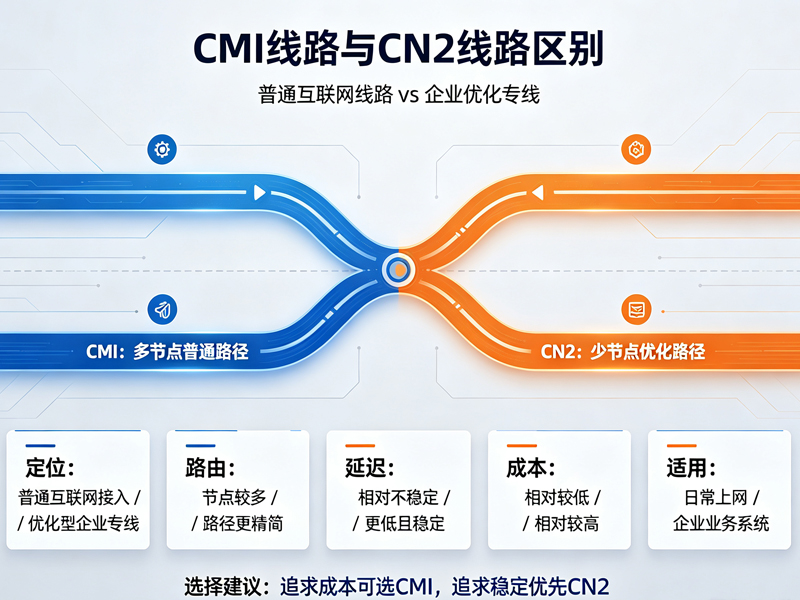

香港机房
香港机房 日本机房
日本机房 美国机房
美国机房 新加坡机房
新加坡机房海外VPS、跨境电商、企业出海业务以及海外网站访问需求不断增加，用户对于国际网络线路的关注越来越高。在选择海外服务器时，很多人都会看到“CMI线路”“CN2线路”“精品网”“国际线路”等各种网络标签。其中，CMI线路和CN2线路是目前面向中国大陆用户较为热门的两类优化线路。
很多用户在购买香港服务器、新加坡服务器、日本服务器或者美国服务器时，经常会纠结：CMI线路到底是什么？它和CN2线路相比有什么区别？哪个线路速度更快、更稳定？其实，这两个线路背后代表的是不同运营商的国际网络资源，它们在覆盖范围、网络质量、价格成本以及适用场景方面都有明显差异。
什么是CMI线路？
CMI线路全称为 China Mobile International，也就是中国移动国际有限公司提供的国际网络线路。它是中国移动面向全球建设的国际通信网络基础设施，主要用于连接中国大陆与海外地区的数据传输。
随着中国移动近年来不断发展国际业务，CMI网络规模持续扩大，目前已经覆盖亚洲、欧洲、美洲、中东等多个地区，并建设了大量国际海缆资源和海外节点。对于中国大陆用户访问海外服务器来说，CMI线路主要依靠中国移动自身的国际出口资源，将数据从海外节点传输到中国大陆，再通过中国移动国内网络完成访问。
简单来说，CMI线路就是“中国移动提供的一套国际网络通道”。如果海外服务器接入CMI线路，那么中国移动用户访问该服务器时，通常可以获得更直接、更稳定的网络体验。
传统国际线路往往需要经过多个运营商之间的互联，例如海外运营商、中国电信、中国联通、中国移动等多个网络节点。在高峰时期，由于国际出口拥堵或者运营商之间带宽资源不足，容易出现延迟升高、丢包增加、速度下降等问题。
而CMI线路最大的特点就是减少中间转接环节。尤其对于中国移动宽带用户来说，通过CMI回程线路访问海外服务器时，路径更加清晰，网络质量通常会更加稳定。
目前市场上常见的CMI优化线路主要集中在香港、新加坡、日本等亚洲地区服务器。由于地理距离较近，加上中国移动拥有大量亚洲方向国际资源，因此这些地区的CMI线路表现通常较好。
CMI线路有哪些特点？
CMI线路最大的优势之一就是中国移动用户体验较好。过去几年，中国移动国际出口能力不断提升，尤其是在香港、新加坡、日本方向建设了较完善的网络节点。因此，使用CMI线路的服务器，对于中国移动用户来说通常具有较低延迟和较好的稳定性。
例如，一台香港CMI线路服务器，中国移动用户访问时可能只需要几十毫秒延迟，而普通国际线路可能需要经过多个国际运营商转接，延迟可能更高，并且在晚高峰期间更容易出现网络波动。
除了低延迟之外，CMI线路还有一个重要特点，就是稳定性较强。由于线路资源属于中国移动国际网络体系，网络路径相对固定，不容易受到第三方运营商临时调整影响。在一些需要长期运行的业务，例如企业网站、跨境电商平台、海外应用服务器、游戏加速节点等场景中，稳定性非常重要。
不过，CMI线路也并不是适合所有用户。由于它本质上属于中国移动国际线路，因此中国移动用户通常收益最大。而中国电信、中国联通用户访问CMI服务器时，效果可能没有移动用户明显。
另外，CMI线路价格通常比普通国际线路更高，因为它属于优化型国际网络资源。服务器商需要购买更高质量的国际带宽，因此最终成本也会反映在价格上。

什么是CN2线路？
CN2是中国电信下一代承载网络的简称，全称为 China Telecom Next Carrier Network。它是中国电信推出的新一代IP网络，用于改善传统国际网络质量。
目前市场上大家常说的CN2线路，通常指中国电信提供的国际优化线路。由于中国电信长期占据中国互联网国际出口的重要位置，因此CN2线路一直被认为是面向中国大陆用户访问海外服务器的高质量网络方案。
CN2线路主要分为两种：
CN2 GT：普通CN2优化线路
CN2 GIA：中国电信精品国际线路
两者虽然都属于CN2网络体系，但质量存在明显差异。
CN2 GT属于中国电信优化线路，相比普通163国际线路有所提升，但是部分路由仍然可能经过传统网络节点。因此在高峰时间，网络表现可能会受到影响。
CN2 GIA则属于更高级别的电信精品线路。它从海外入口到国内出口基本都采用CN2网络节点，并且拥有更高优先级，因此延迟、稳定性和丢包控制能力通常更优秀。
这也是为什么很多美国VPS、日本服务器、香港服务器都会重点宣传“CN2 GIA线路”。因为对于大量中国电信用户来说，CN2 GIA确实能够提供接近国内服务器的访问体验。
CMI线路和CN2线路有什么区别？
CMI线路和CN2线路最大的区别，在于背后的运营商不同。
CMI属于中国移动国际网络，而CN2属于中国电信网络。两者分别服务于不同运营商用户，因此实际体验会受到用户网络环境影响。
如果用户使用中国移动宽带，那么CMI线路通常表现更优秀。因为用户访问CMI服务器时，数据可以通过中国移动自己的国际出口完成传输，减少运营商之间交换带来的影响。
而如果用户使用中国电信宽带，那么CN2线路通常更占优势，尤其是CN2 GIA线路。因为数据直接进入中国电信优化网络，整体路径更加稳定。
从延迟方面来看，两者在亚洲地区通常差距不大。例如香港、新加坡、日本服务器，CMI和CN2都可能达到较低延迟。但是到了美国、欧洲等距离较远的地区，CN2 GIA由于长期建设欧美方向精品网络，因此优势会更加明显。
从稳定性来看，CN2 GIA通常被认为是目前中国大陆访问海外服务器中质量较高的线路之一。它拥有更高网络优先级，对于企业级业务和高稳定性需求用户更加适合。
CMI近年来发展速度很快，尤其是在香港、新加坡方向表现突出。在中国移动用户占比较高的地区，CMI甚至可能比普通CN2线路体验更好。
CMI线路和CN2线路哪个好？
实际上，CMI线路和CN2线路并不存在绝对的“谁更好”，关键取决于用户的运营商、业务需求以及服务器所在地。
如果你的主要用户是中国移动宽带用户，那么选择CMI线路通常更加合理。例如香港CMI服务器、新加坡CMI服务器，对于移动用户访问速度非常不错。
如果你的用户主要来自中国电信，那么CN2 GIA通常是更好的选择。特别是美国服务器、日本服务器、欧洲服务器，CN2 GIA能够提供更加稳定的跨境访问体验。
如果业务面向全国用户，包括电信、联通、移动三大运营商，那么单独选择CMI或者普通CN2可能并不是最佳方案。这种情况下，可以考虑BGP线路、多线服务器或者三网优化线路，通过不同运营商自动选择最佳路径。
从价格角度来看，CMI线路通常比普通国际线路贵，但部分地区价格低于高端CN2 GIA。CN2 GIA由于资源稀缺，价格通常较高，尤其是美国方向的CN2 GIA服务器，带宽成本明显增加。
CMI线路适合哪些业务？
CMI线路比较适合以下几类业务：
面向中国移动用户的网站
跨境电商平台
海外应用服务器
游戏下载节点
亚洲地区业务部署
不过，如果你的业务主要面向中国电信用户，或者用户集中在北方地区，那么部署前最好进行实际测试。
CN2线路适合哪些业务？
CN2线路更适合对网络质量要求较高的业务。
海外企业官网
跨境电商网站
金融交易系统
游戏服务器
视频直播平台
海外应用服务
特别是CN2 GIA线路，由于稳定性和低丢包特点，在企业级应用中非常受欢迎。
如何选择CMI线路和CN2线路？
选择线路时，不要只看服务器商宣传的“高速”“优化”“精品”等关键词，而应该关注实际测试数据。
首先，需要确认你的主要用户群体使用什么运营商。如果用户主要是中国移动，CMI可能更合适；如果用户主要是中国电信，CN2 GIA更值得考虑。
其次，需要查看实际路由情况。可以通过Ping测试、Traceroute测试查看数据经过哪些节点，判断线路是否真实。
第三，需要考虑业务类型。如果只是个人博客、小型网站，CMI或者普通优化线路可能已经足够。如果是企业业务、商业网站、游戏服务，则建议选择稳定性更高的CN2 GIA或者多线方案。
CMI和CN2如何选择？
CMI线路和CN2线路都是目前中国大陆访问海外服务器的重要优化线路，但它们服务的重点不同。
CMI线路依托中国移动国际网络，在香港、新加坡、日本等亚洲方向表现优秀，尤其适合中国移动用户，具有较好的性价比。
CN2线路依托中国电信网络，其中CN2 GIA属于高质量国际线路，在欧美方向以及企业级应用中拥有明显优势，是很多高要求用户的首选。
如果追求极致稳定和全国电信用户体验，CN2 GIA通常更合适；如果主要面向移动用户，或者需要亚洲地区高速访问，CMI线路也是非常值得考虑的方案。